Mi experiencia con el embarazo fue un proceso muy magico quiza por ser el primero, quiza por las pocas molestias que tuve. Al inicio comence con sensacion de ascos con todas las comidas, nunca vomite pero si se redujo la cantidad de comida de consumia. Odiaba todas las carnes rojas en cualquier presentacion, cocinar se hacia algo complicado porque eso hacia que comiera todavia menos. La solucion que intente al inicio fueron los TUMS
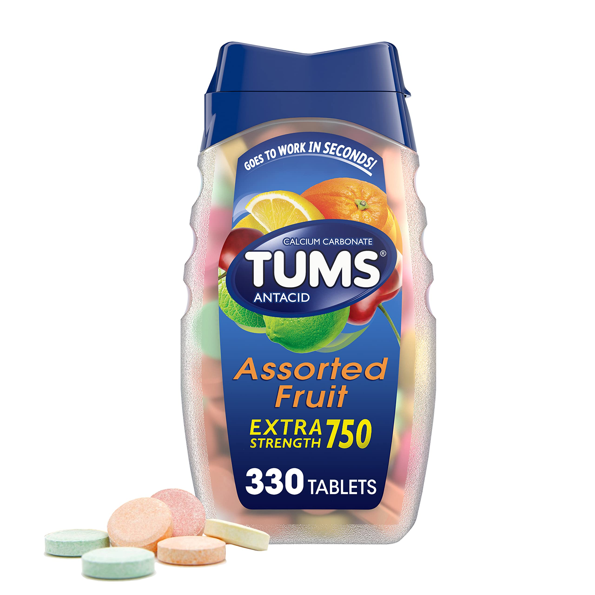Mi problema con los TUMS es que comenzaron a generarme reacciones secundarias asi que tuve que suspenderlos asi que la mayor parte de mi embarazo lo unico que me servia para estos momentos de asco fue controlarlo con respiracion, alejarme de olores que lo provocaran y alimentarme solo de sopas sencillas y sushi de arroz con queso.
Otra de las primeras cosas que hice fue adquirir una bocina para ponerle musica a mi bebe. La musica que solia ponerle es la lista que aparece en la izquierda de esta pagina y cuando mas lo utilice fue en la etapa en que el bebe comienza a patear
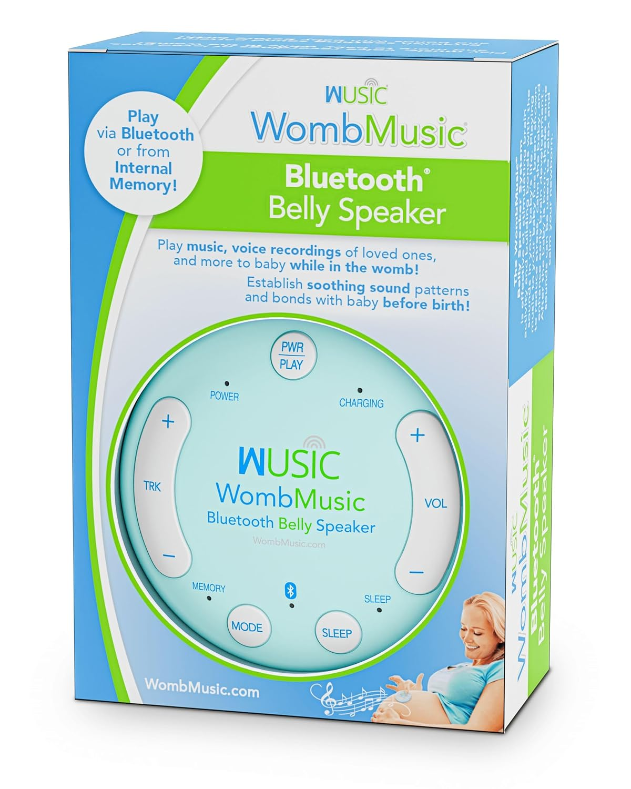La hora de dormir, tan amada por mi, se comenzo a convertir en un problema a los 4-5 meses porque el bebe ya comienza a pesar y se vuelve un poco incomodo. Apesar de que si tuve dolores y me costaba trabajo dormir comoda nunca llegue al extremo en el que tuviera que dormir sentada o que realmente las noches fueran un problema pero nunca espere a llegar a ese punto, desde el inicio consegui una almohada.
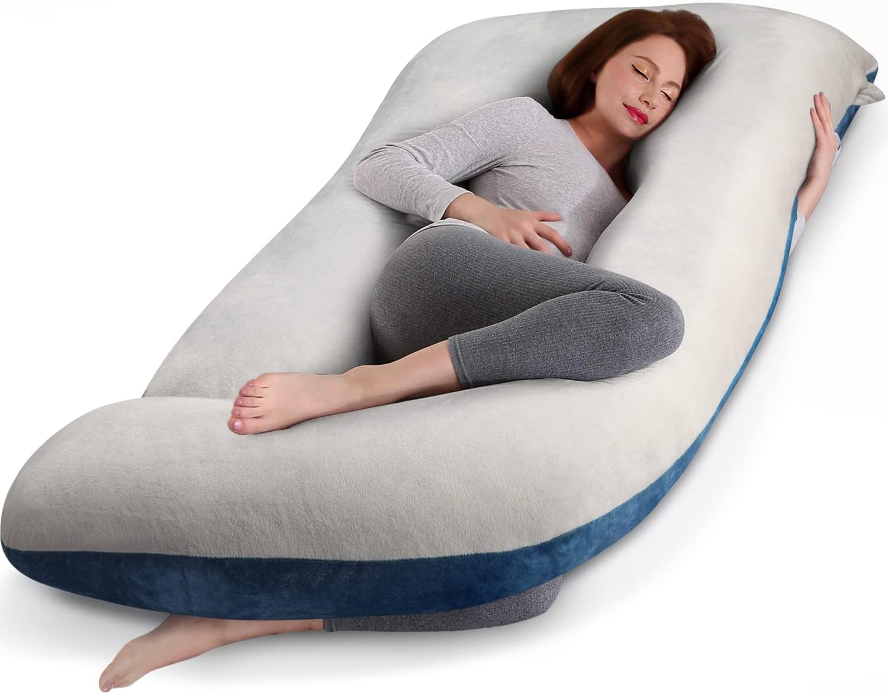Una de las ultimas cosas que consegui fue una faja. El peso de la pancita ya era bastante y me comenzo a generar dolores que muchas veces aparecian incluso al caminar asi que, bajo aprovacion de mi doctora, compre una faja para ayudarme con el peso. Preferi este formato porque otros que incluian cintas extras para abrazar la pancita no los creia demasiado comodos para mi gusto.
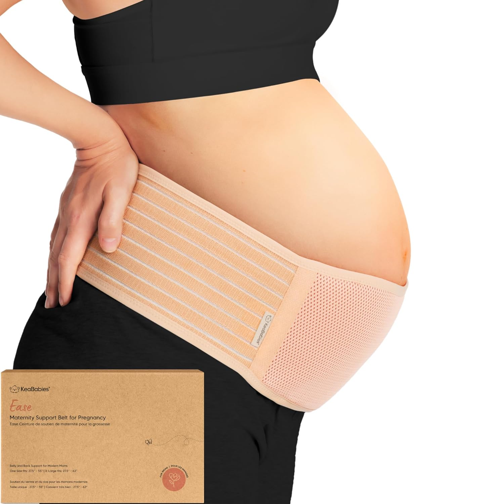Utilice las siguientes cremas desde el segundo trimestre. Si tuve algunas estrias despues del embarazo y desde un inicio no esperaba magia de ellas pero mas bien lo hice por mi gusto de cuidarme la piel manteniendola hidratada y durante el proceso descubri que era uno de esos momentos que disfrutaba pasar con mi pancita sobando a mi beba y platicando con ella,
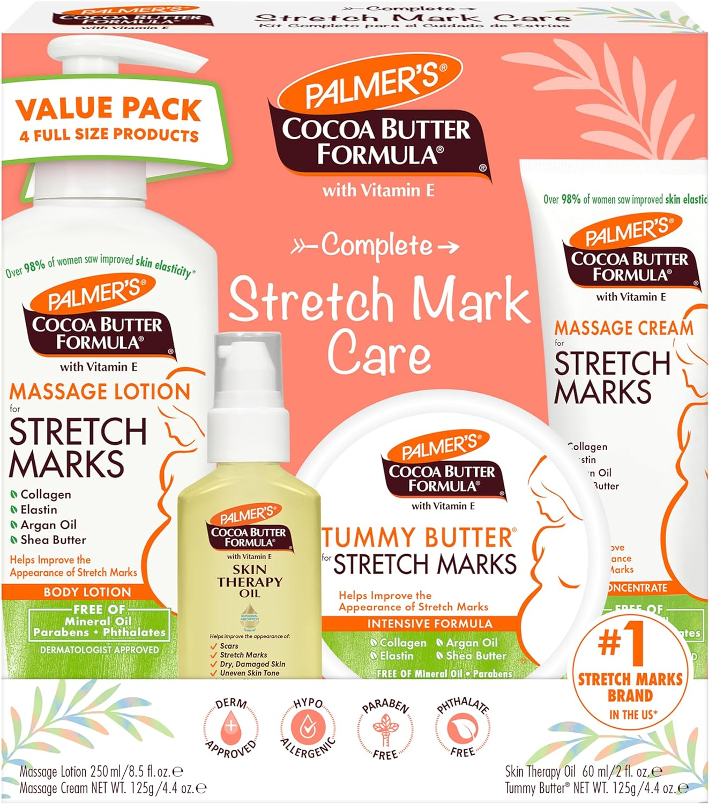Como extra, hubieron videos que veia semana a semana sobre el desarrollo del bebe. Con ellos me despertaba emocionada cada domingo sabiendo como iba a ir creciendo y desarrollando habilidades
Todo lo que vivi lo digo desde la experiencia de un parto. Ingrese al hospital a medio dia y a las 9 de la noche ya tenia a mi bebita en mis brazos. Ocupe epidural pero me la suspendieron durante el proceso de expulsion, la doctora me dio la opcion de romperme la fuente y lo acepte, tuve un ligero desgarro y ninguna complicacion.
Como mis basicos lo que utilice desde el primer momento fueron un botecito para enjuagarme cuando iba al bano
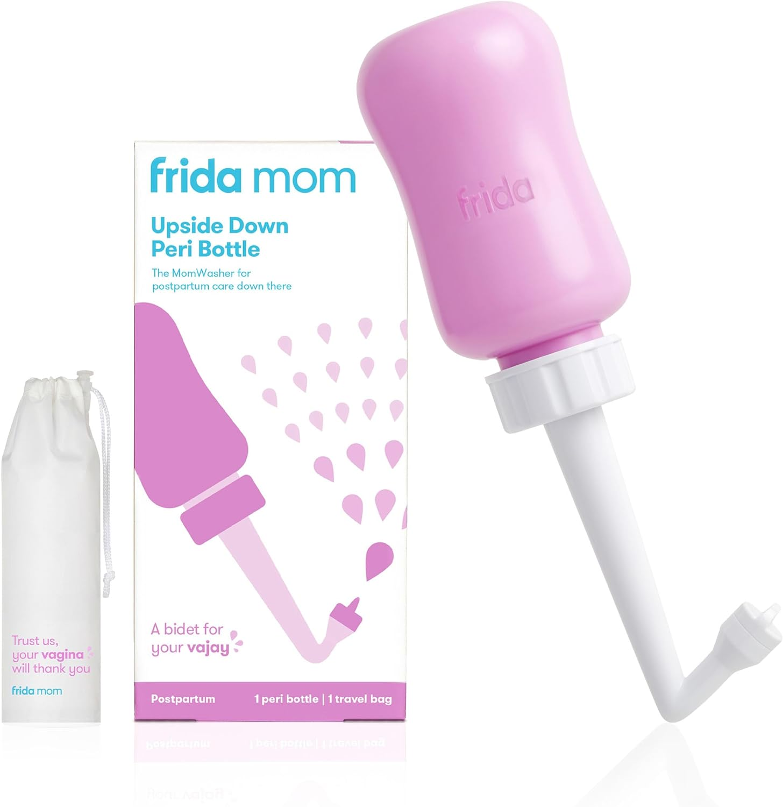Toallas sanitarias frias que no use mucho porque los dias que estuve en el hospital en recuperacion me estuvieron haciendo los que necesitaba y cuando llegue a casa el dolor ya era muy poco asi que de ellas podria decir que no son tan duraderas como esperaba ni tan frias como las que use en el hospital pero si alguien tiene dolor no dude en comprarlas, si funcionan los primeros minutos
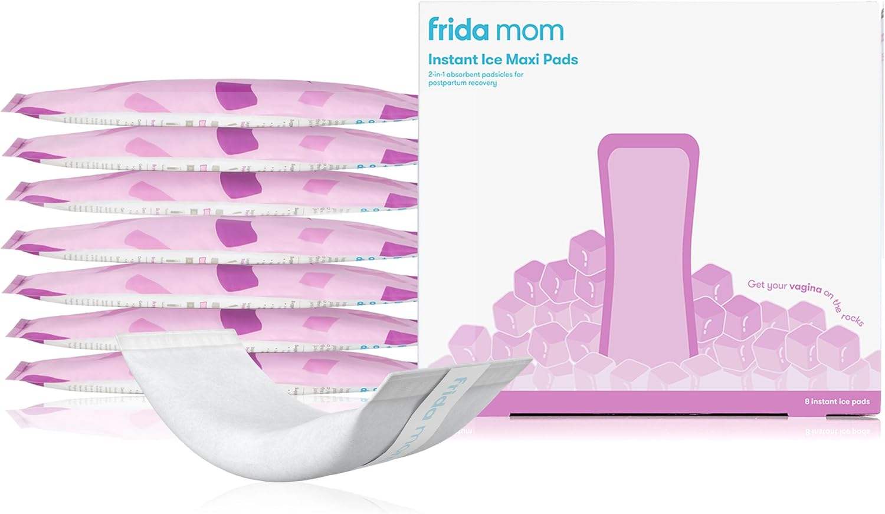Para el tema del sangrado estuve utilizando toallas sanitarias postparto y ropa interior desechable. Ambos productos tienen mi completa recomendacion aun cuando mis sangrados fuera del hospital no llegaron a ser muy intensos era frecuente el manchado de la ropa y la comodidad de poder deshacerme de ella en vez de tener que preocuparme por lavar y usar ropa que nunca va a quedar totalmente limpia es un desgaste menos del cual preocuparme en medio de todo el caos que sucedio en mi cabeza esos dias. Con el tema de las toallas, hay toallas sanitarias regulares pero en mi opinion, este tipo que yo utilice me dio mucha mas seguridad por el tamano y buena absorvencia,
Otro producto ue no utilice fue ropa interior tipo panal que ya incluye la absorvencia en el calzon deshechable. No me imagine mucha comodidad en ellos pero como digo, nunca los use.
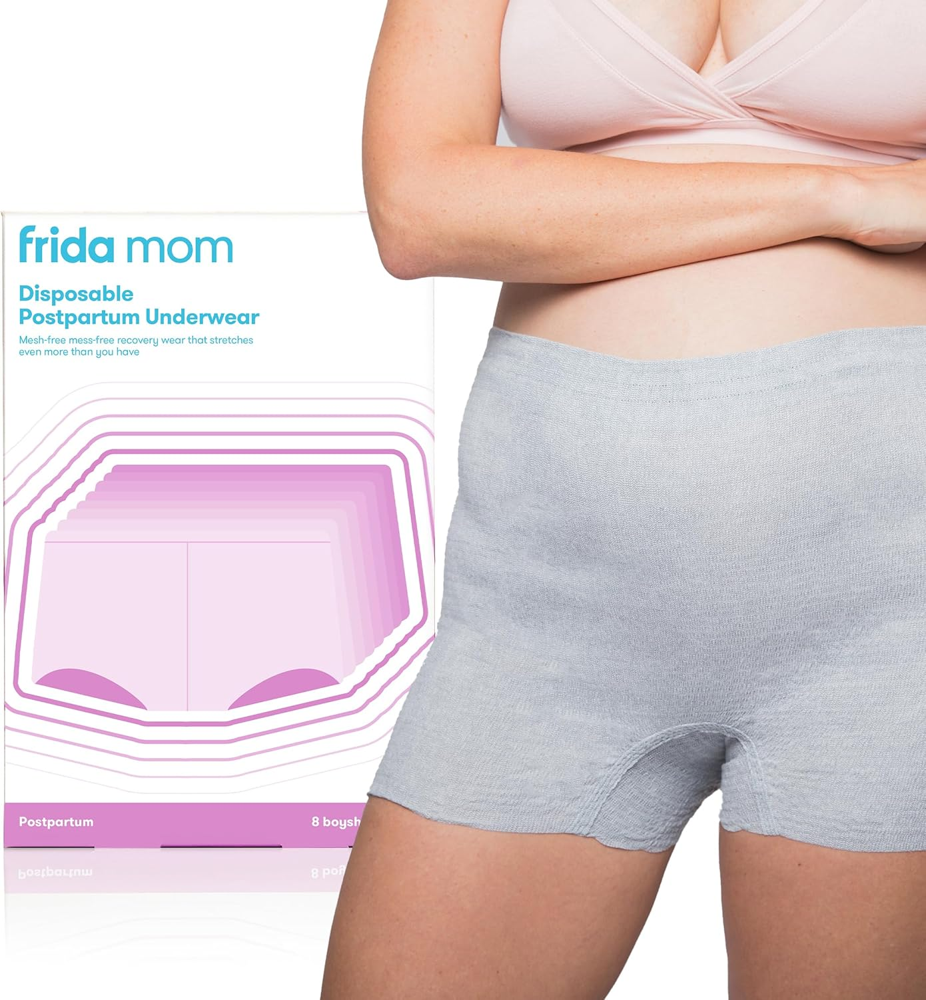 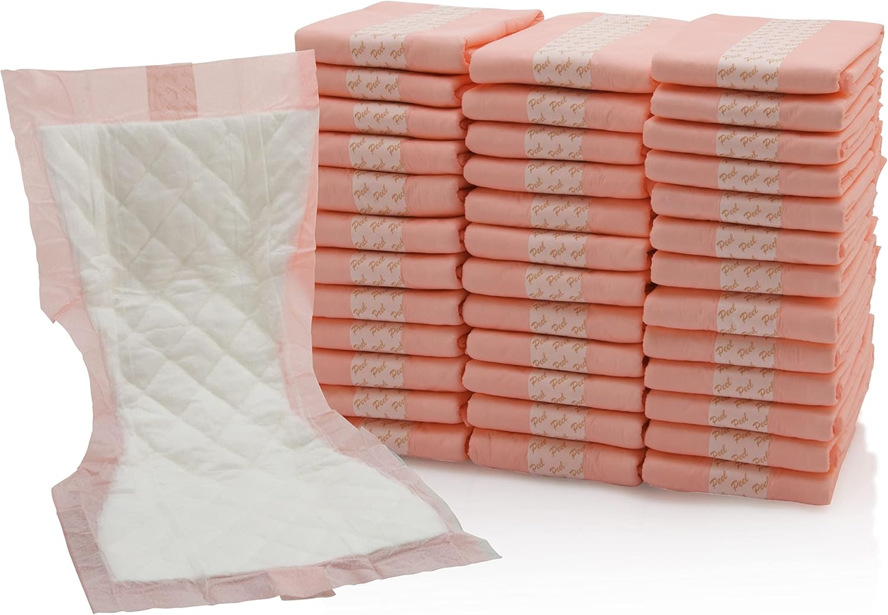Con el tema del dolor me recetaron medicina desde el hospital pero como extra utilice dos articulos: pads de la marca TUCKS las cuales utilizaba tres por cambio a lolargo de la toalla sanitaria y Dermoplas tambien a cada cambio. Fueron una maravilla! habian dias en que debido a estar sentada quedaba adolorida pero el malestar desaparecia inmediatamente despues de cambiar estos dos productos.
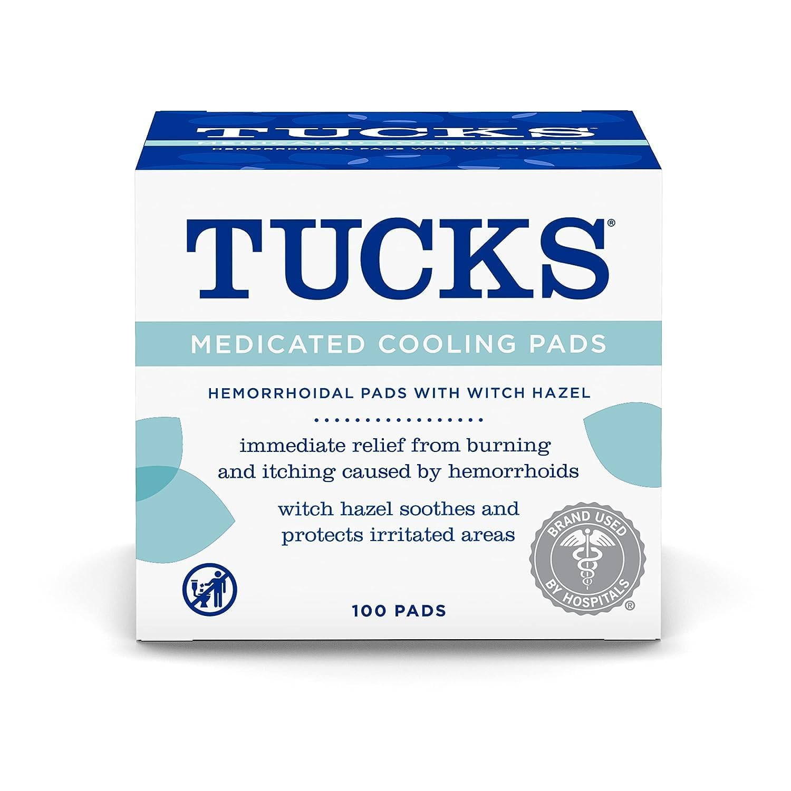 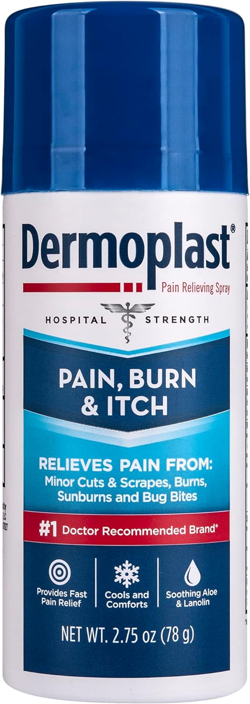